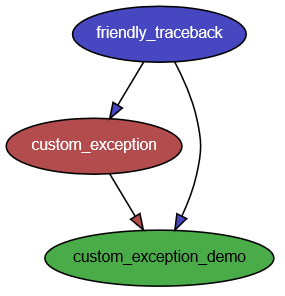
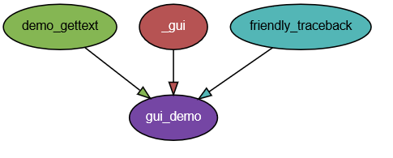
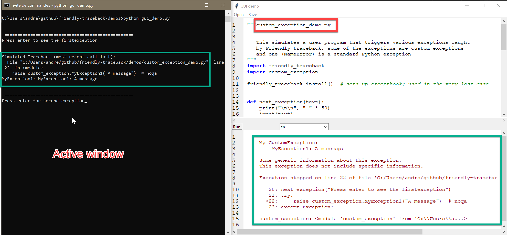
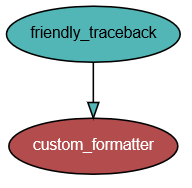

Description of demos¶
Note
Read the following if you are interested in making use of Friendly-traceback in your own project, perhaps adding your own exceptions, or wanting to change the formatting.
In the demos directory, there are a few different files, including the following.
custom_exception.py¶
Shows how to define custom exceptions that are ready to be used by Friendly-traceback. While this is not required, we show how to support translations.
There is no point in running this file as a script.
custom_exception_demo.py¶
This is a demo that generates a few exceptions (most of which are imported from custom_exception.py), process them with Friendly-traceback, and shows the result.
This script can be run from a command line.
gui_demo.py¶
This is a demo GUI that should be run from a command line.
After starting this GUI demo, which does nothing on its own, I suggest that you use the menu to open “custom_exception_demo.py” and run it; you will need to interact from the console (command line) as if you were executing that script from Python.
{kind=link}
The “simulated” Python traceback is shown in the console on the left; the program pause periodically and ask the user to proceed to the next example.
On the right, we can see the file “custom_exception_demo.py” loaded in the editor at the top; at the bottom, we see the custom exception information.
Note that this GUI could likely be significantly improved; it is included only as a proof of concept. Experienced GUI programmers should feel most welcome to contribute their expertise and make this a more user-friendly demonstration.
custom_formatter.py¶
A custom formatter which creates an html file from a given exception.
Running this custom formatter will produce the following ugly html output (additional border added “by hand” here).
Python exception:
NameError: name 'a' is not defined
Likely cause:
In your program, the unknown name is 'a'.
Execution stopped on line 72 of file 'custom_formatter.py'.
70:
71: try:
-->72: b = a + c # noqa
73: except Exception:
70:
71: try:
-->72: b = a + c # noqa
73: except Exception:
demo_gettext.py¶
Provides translation support for the demos
Additional file: _gui.py¶
Various GUI elements that do not depend on either demo_gettext.py or friendly_traceback and would only clutter the code of demos if they were included in the script to be run.